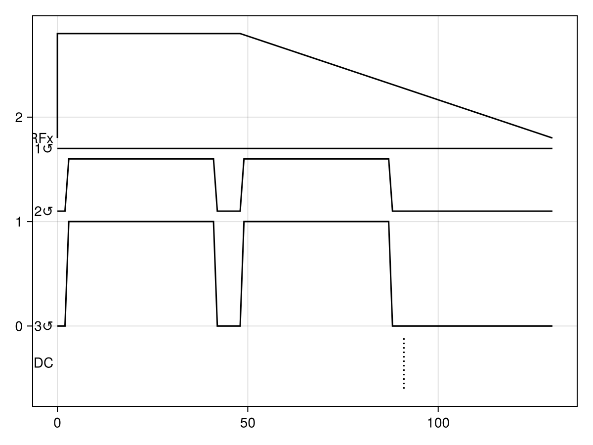
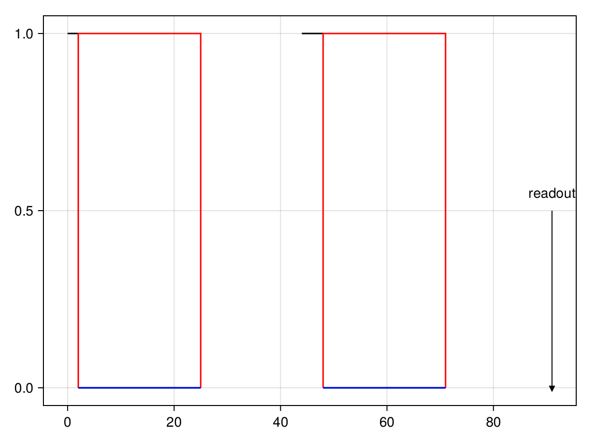

MR sequences
Pulseseq sequences
Pulseq sequences can be generated using matlab (http://pulseq.github.io/) or python (https://pypulseq.readthedocs.io/en/master/). They can be loaded into MCMRSimulator using read_sequence. On the command line they can be provided directly to any call of mcmr run, without calling mcmr sequence first. Developing your sequences in pulseq has the advantage that they can be used both in MCMRSimulator and on your MRI scanner.
Built-in MR sequences
Simple gradient_echo and spin_echo sequences are available. A pulsed-gradient spin-echo can be created using dwi.
From the command line these sequences can be generated using mcmr sequence gradient-echo/spin-echo/dwi.
In Julia, one can use:
sequence = dwi(TR=100., bval=3.)
By setting the gradient_duration keyword to 0, InstantGradient objects can be inserted instead of MRGradients.
sequence = dwi(TR=100., bval=3., gradient_duration=0.)
Custom MR sequences
In MCMRSimulator.jl an MR Sequence describes the RF pulses and gradients applied by the MRI scanner.
This sequence contains of:
- RF pulses, which can be instantaneous (
InstantRFPulse) or be described more realistically as RF amplitude/phase profiles ([RFPulse]) - Gradients. Like RF pulses they can be approximated as instanteneous (
InstantGradient) or have a finite duration (MRGradients) - Readouts (
Readout). These are always instanteneous as realistic modelling of an actual MRI readout would require modelling the whole brain and receiver coil configuration, which is far beyond the scope of this simulator.
Each of these sequence components will play identically every repetition time (TR) of the sequence.
The simplest way to create these sequences is as a (possibly nested) vector of sequence BuildingBlock, which are played in sequence. Each building block can be one of the following:
- an RF pulse (
InstantRFPulseor finiteRFPulse) - a gradient (
InstantGradientor finiteMRGradients) - a number indicating a delay
- a
Readout - a
BuildingBlockobject, which can be used for when an RF pulse and gradient need to played simultaneously (e.g., for slice-selective pulses)
Such a (nested) vector can be passed on directly to the Sequence constructor.
Such custom sequences cannot be generated using the command line yet.
For example, a simple pulsed-gradient spin echo sequence could be generated in the following way (rather than call dwi):
base_trapezium = MRGradients([
(0, 0),
(1, 0.01), # 1 ms rise time to 0.01 kHz/um
(39, 0.01), # constant amplitude for 38 ms
(40, 0), # total duration of 40 ms
])
trapezium = rotate_bvec(base_trapezium, [0, 1, 1]) # point +y/+z diagonal
sequence = Sequence([
constant_pulse(2, 90), # start with 2 ms excitation pulse
trapezium, # followed immediated by MR gradients
2, # wait for 2 ms
constant_pulse(4, 180), # refocus pulse (4 ms long)
trapezium,
3,
Readout(), # Readout 90 ms after middle of excitation pulse
], TR=130, scanner=Scanner(B0=3.))
Adding diffusion-weighting can be made easier using add_linear_diffusion_weighting:
# Build sequence without diffusion weighting
base_sequence = [
constant_pulse(2, 90),
42, # to be replaced with gradient
constant_pulse(4, 180),
23, # to be replaced with gradient
20, # kept empty to allow time for extended readout
Readout(),
]
# replace blocks 2 and 4 in the `base_sequence` with gradients that produce a b-value of 1 um^2/ms
with_dwi = add_linear_diffusion_weighting(base_sequence, 2, 4, bval=1.)
sequence = Sequence(with_dwi; TR=100)